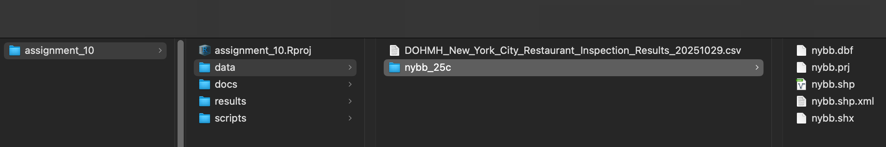

Class 10 Assignment: Correlation in R - NYC DOH Grades vs. Violations
Fall 2025 | Instructor: Stephen Metts | PGUD 5160 - CRN 2247
Preamble
In this ninth week’s assignment, we will continue the Class 10 lab exploration of correlation methods in R via the Department of Health’s (DOH) Restaurant’s Inspection Data Set.
As we did for assignment 9, we’ll integrate the plotting results as image files (.png) into the Class 10 Assignment .Rmd submission.
Follow the steps below: first orient to this week’s materials, then work through this week’s script. Utilize the sections below in the assignment for an overview of the important sections of this week’s correlation exploration.
Due Sunday 11/09/25 at 11:59pm.
Note: this week’s assignment is not due on Thursday, but rather Sunday.
Week 10 Materials
- Class 10 Agenda
- Class 10 Lecture Slides
- Class 10 lab
- Class 10 Assignment - This Document
- Class 10 Assignment Script #1
- Class 10 Lab Script #1
- Class 10 Assignment .Rmd ‘starter file’
As we have done for past assignments, Create an R Project pointing at your assignment_10 folder with subdirectories: /data, /scripts, /docs, /results. Confirm your working directory with getwd() and list files via list.files(recursive = TRUE) as needed.
Week 10 Assignment Data
Like Lab 10, we will download the starter data, uncompress it and place into the /data directory. Make sure to alter your paths in the assignment scripts as needed.
Assignment 10 Data Download LINK

/data structureWeek 10 Reading
Next week’s quiz 10 will feature 5 multiple choice questions, and 5 True or False questions on the following online, accessible article:
This week’s assignment will evaluate the correlative relationship inside the DOH Restaurant Inspection Data Set. This week’s reading contextualizes the findings within a larger discussion of the purpose, history and effectiveness of the city’s larger inspection system.
Pay attention to the following components of the reading:
Origins & Purpose — NYC’s restaurant letter-grade system, launched in 2010, was designed to improve sanitation and make food-safety performance visible to diners.
How It Works — DOHMH inspectors score violations by severity, assigning grades A–C based on total points and adjusting inspection frequency accordingly.
Implementation & Coverage — Around 25,000 restaurants undergo routine and follow-up inspections, with new establishments graded soon after opening.
Effectiveness & Response — Over 90 % of restaurants now earn A-grades, though operators raise concerns about consistency and inspection fairness.
Consumer Transparency — Publicly posted grades shape dining choices for most New Yorkers, reinforcing accountability while promoting safer practices.
At 7am Sunday, November 9th, the tenth weekly quiz will open in Canvas. This will be our final quiz of the semester. The quiz code will be provided as an announcement (not agenda) on Sunday at 7am on 11/09/25. Expect 10 questions in total that cover the reading above.
Note: Check announcements in Canvas, not the weekly agenda, for the quiz code access on 11/09/25. The quiz will stay open through Monday 11/10/25, midnight.
Assignment 10 — NYC Restaurant Inspections
SCORE vs. Number of Critical Violations
(Dataset: DOHMH New York City Restaurant Inspection Results)
💡 Purpose
Evaluate the relationship between a restaurant’s inspection SCORE (lower is better) and the number of critical violations cited on the same inspection day, using record-level data (restaurant × day) to minimize spatial autocorrelation. We keep in mind that there is an ‘internal logic’ to this relationship: inspection SCORE by its very nature involves violation activity. Here we are testing the sensitivity to number of critical violations which are a subset of all violations.
📥 1) Data Ingestion & Normalization
- Read the local CSV, standardize column names, and treat all fields as text initially to avoid mis-parsing.
- Build a canonical inspection date:
- Parse
inspection_dateas MM/DD/YYYY.
- Convert 1/1/1900 sentinel dates to NA (not yet inspected). We make this conversion per the data set metadata which states that this date is a flag for not yet inspected.
- Parse
⚙️ 2) Critical Severity Determination
- Normalize
critical_flagvalues:- Critical → 1, Not Critical → 0, Not Applicable → 0.
- This produces
critical_indfor counting critical violations.
🧮 3) Collapse to One Row per Inspection (CAMIS × day)
- Many rows per inspection day (one per cited item).
- Aggregate to a single record with:
score(inspection’s numeric score),
criticals(sum ofcritical_ind),
total_viol(count of all cited items),
- coordinates if present (
lat,lon); these can be used for mapping.
📊 4) Distributions (EDA)
- Plot two histograms:
- SCORE (lower is better)
- # of critical violations
- SCORE (lower is better)
- Note: both are right-skewed but not multimodal/bimodal. We may indeed prioritize Spearman correlation over Pearson correlation as its more sensitive to non-normal distribution as well as outliers.
🔗 5) Correlation Analysis
- Compute Pearson (linear) and Spearman (rank/monotonic) correlations for
scorevs.criticals.
- Show correlation matrices and run
cor.test()for inferential results.
📈 6) Scatterplot (no smooth line)
- Plot
criticals(x) vs.score(y) as points to visualize the pattern.
🗺️ 7) Map
- Read nybb (NYC boroughs, EPSG:2263), use as the map extent.
- Transform points to 2263 and plot colored by binned SCORE
with finer bins at low scores and a top outlier bin (50+).
- Style boroughs with a 0.5 pt black stroke.
💾 8️⃣ Save PNG Outputs
This section automatically creates an export folder — ~/Desktop/assignment_10/results — and saves key visual outputs as high-resolution .png images. Revise your upstream path as needed. All plots can be referenced outside of the assignment script, i.e. the .Rmd assignment submission.
| 📊 Plot / Output | 🗂️ Filename |
|---|---|
| Score + Criticals histograms | score_histograms.png |
| Pearson correlation heatmap | corr_pearson.png |
| Spearman correlation heatmap | corr_spearman.png |
| SCORE vs # critical violations (scatter) | score_vs_criticals_scatter.png |
| NYC inspections map (if data present) | nyc_inspections_map.png |
💡 Tip: Running this final code chunk will populate the results directory with all the visual outputs in one step — an easy plug into the .Rmd submission.
💡 Results (Interpretation)
Given outputs
- Pearson’s r:
- r = 0.838 | 95% CI [0.836, 0.840] | p = 0
- Spearman’s ρ:
- ρ = 0.848 | p = 0
In R,
p = 0prints when the p-value is so small it underflows the display format.
What these mean
- Magnitude: Both coefficients (~0.84–0.85) indicate a very strong positive association: inspections with more critical violations almost always have worse (higher) scores.
- Precision: The narrow 95% CI for Pearson (0.836–0.840) shows a highly stable estimate due to the large sample size.
- Significance: p ≈ 0 implies the observed associations are not due to chance.
Pearson vs. Spearman — which to prefer here?
- Pearson’s r tests linear association on the raw values and assumes roughly linear form and limited outlier influence.
- Spearman’s ρ uses ranks and captures monotonic association; it is more robust to skew and outliers.
- In this dataset, both test results are extremely high and similar. Given the right-skew in both variables and the possibility of non-constant increments in score as criticals increase, Spearman’s ρ is a slightly more conservative choice.
- That said, the near-equivalence of r and ρ here suggests the relationship is both monotonic and close to linear in practice.
Caveat for interpretation: NYC inspection SCORE is partly a function of violations (including critical ones). The strong correlation therefore reflects a construct relationship (not surprising), which is still valuable analytically but should be framed as validation/diagnostic rather than discovery of an independent association.
📊 Visual Diagnostics
- Histograms for SCORE and # critical violations are right-skewed, but not multimodal/bimodal.
- The scatter shows a tight, upward trend: more criticals → higher score.
📝 Prompts for .Rmd submission
1️⃣ Interpretation & Causality
Prompt:
Explain why a strong positive correlation between SCORE and # critical violations is expected given how SCORE is computed. Why is this still an informative result?
Explainer:
A strong positive correlation is expected because NYC inspection SCORE is derived directly from the accumulation of violation points, many of which are assigned higher weights when they are “critical.” Therefore, as the number of critical violations rises, the total inspection score mechanically increases.
This correlation is still informative because it confirms the internal consistency of the data system — higher critical counts align predictably with worse scores. The relationship validates the underlying inspection logic and provides a benchmark for cross-checking data quality or identifying anomalies (e.g., high scores with few criticals may indicate scoring or reporting errors).
2️⃣ Robustness Check
Prompt:
If we re-estimate correlations using (a) Pearson, (b) Spearman after removing inspections with SCORE ≥ 50 (outliers), what happens to the coefficients, and why?
Explainer:
When outlier inspections with extremely high scores are removed, both correlations typically decrease slightly because the most extreme data points often anchor the upper end of the trend. However, the Spearman ρ usually changes less than Pearson’s r, since rank-based correlation is less sensitive to outlier magnitude. The reduction in r demonstrates how extreme cases can exaggerate linear relationships, while the stability of ρ highlights that the overall monotonic pattern remains strong even after outlier removal.
This robustness test confirms that the observed relationship is not driven solely by a few extreme events, but reflects a consistent pattern across the majority of inspections.
3️⃣ Spatial Reflection
Prompt:
Even though the analysis avoids tract-level aggregation, how might local context (e.g., dense commercial corridors) still influence the results?
Explainer:
Even with restaurant-level data, spatial clustering may persist because certain neighborhoods (e.g., Midtown, Downtown Brooklyn, Chinatown) have higher densities of older facilities or more frequent inspections. These clusters can create localized score patterns that subtly bias correlations if conditions are spatially autocorrelated.
Part II Deliverables
In this week’s .Rmd submission, consider the previous 💡 Results and 📝 Prompts to guide your project summary section. To follow is a checklist for your submission:
✅ What to Report (Checklist)
- Short description of the dataset and unit of analysis (restaurant × inspection day).
- Two histograms (SCORE, # criticals) with skew noted.
- Pearson and Spearman correlation coefficients (with CIs/p-values for at least Pearson).
- A scatterplot of SCORE vs # criticals.
- (Optional) A borough map with binned score points over nybb.
- A 2–3 paragraph interpretation addressing why the correlation is strong, how distributional shape matters, and when Pearson vs Spearman is the better choice.
Submission Notes
Submit an HTML or PDF produced from your Assignment 10 .qmd (use starter - Class 10 Assignment .Rmd ‘starter file’).
Utilize the Class 10 Assignment .Rmd ‘starter file’ for the development of your write-up and correlation visuals and results.
Timeline & Deliverables
- Due: (Sunday, November 9th, 2025 - 11:59pm )
- Deliverables: rendered
.htmlor.pdf; hold onto your.qmdin the project folder (do not remove after rendering).